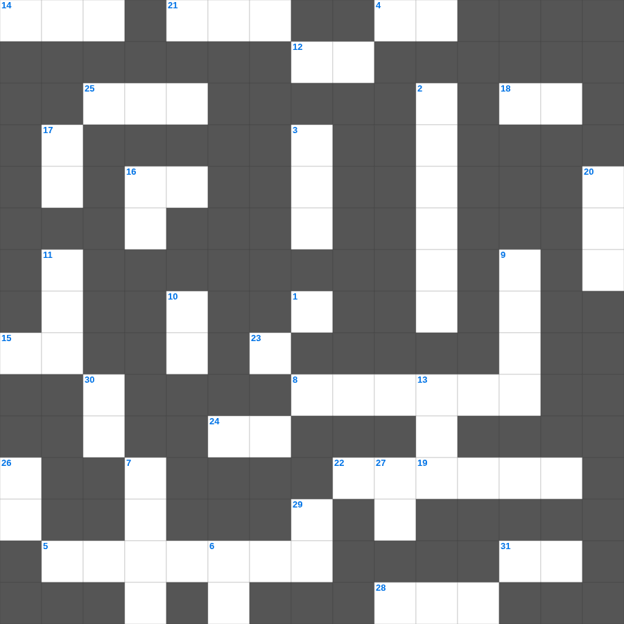

성경 속 보석과 금속
📌 서비스 정의
십자가로세로는 교회 주보와 주일학교에서 사용할 수 있는 성경 기반 가로세로 퍼즐 서비스입니다. 성경 인물, 사건, 핵심 구절을 바탕으로 제작되었습니다. 온라인 풀이 및 인쇄 기능을 제공합니다.
오늘은 성경의 주요 내용을 담은 성경 무료 성경퀴즈를 준비했습니다. 총 35개의 힌트가 있으며, 주일학교 교재나 성경공부 자료로 활용하기 좋습니다. 무료로 즐기는 성경 가로세로 퍼즐을 지금 바로 풀어보세요!

📝 가로 힌트
1. 모든 사람이 지은 근본적인 문제
4. 기드온의 300 용사가 든 것: 항아리와 이것
5. 웃사가 법궤를 만지다 죽은 사건
6. 예수님이 광야에서 시험받으신 기간
8. 내게 능력 주시는 자 안에서 내가 모든 것을 이것할 수 있느니라
12. 기쁜 소식, 즉 예수 그리스도의 이야기
14. 향을 피워 올리는 곳
15. 노아 시대에 온 세상을 뒤덮은 물 심판
16. 미리암이 홍해 건넌 후 손에 든 악기
18. 요한이 요단강에서 예수님께 행한 예식
19. 예수님이 산 위에서 전하신 복음의 핵심
21. 바울이 2년 동안 가르쳤던 서원
22. 예수님이 변화되신 산
23. 너는 나 외에는 다른 이것들을 두지 말라
24. 불뱀에 물린 자들이 이것을 보면 살았다
25. 끝까지 이것하는 자는 구원을 얻으리라
28. 용서할 때 일흔 번씩 몇 번까지?
31. 믿음의 이것으로 악한 자의 화전을 소멸함
📝 세로 힌트
2. 신구약 성경 중 가장 짧은 장은? (숫자)
3. 이스라엘이 애굽을 탈출한 사건
6. 예수님이 율법의 완성이라고 하신 것
6. 하나님은 이것이시라
7. 살아계신 하나님의 아들
9. 쉬지 말고 이것하라
10. 의의 이것 신경(호심경)
11. 어린 양의 보좌로부터 나오는 이것의 강
13. 모세가 가나안 땅을 바라보며 죽은 산
16. 너희는 세상의 빛과 이것이라
17. 천국은 마치 가루 서 말 속에 넣은 이것과 같으니
20. 행함이 없는 믿음은 그 자체가 이것이라
26. 제사장이 입던 겉옷
27. 성령의 9가지 열매 중 세 번째
27. 사랑, 희락, 이것
29. 하나님이 세상을 창조하신 기간(일)
30. 예수님이 다시 오시는 일
🧩 이 퍼즐에서 배우는 내용
이 퍼즐은 성경 속 보석과 금속의 핵심 단어와 개념을 자연스럽게 복습할 수 있도록 구성되었습니다. 주일학교 수업이나 개인 성경공부에서 학습 내용을 점검하는 용도로 바로 활용할 수 있습니다.
🧑🏫 교회 교육 자료 활용
이 퍼즐은 주일학교 교재 추천 자료로 활용할 수 있고, 주일학교 주보에 넣기 좋은 분량으로 구성되어 있습니다. 수업용 주일학교 교안에 활동지로 붙이거나, 예배 후 복습용 주일학교 공과교재로 바로 사용할 수 있습니다.
🏷️ 키워드
성경 무료 성경퀴즈, 성경, 십자가로세로, 성경퀴즈, 말씀퀴즈, 가로세로퍼즐, 주일학교 교재 추천, 주일학교 주보, 주일학교 교안, 주일학교 공과교재